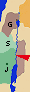
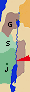

| |
 |
 |
 |
 |
 |
 | Ministry of John the Baptist |
| 

|  3:1 In those days, John the Baptizer came, preaching in the wilderness of Judea, saying, 3:1 In those days, John the Baptizer came, preaching in the wilderness of Judea, saying,
3:2 "Repent, for the Kingdom of Heaven is at hand!"
3:3 For this is he who was spoken of by Isaiah the prophet, saying, "The voice of one crying in the wilderness, Make ready the way of the Lord, Make his paths straight."
3:4 Now John himself wore clothing made of camel's hair, with a leather belt around his waist. His food was locusts and wild honey.
3:5 Then people from Jerusalem, all of Judea, and all the region around the Jordan went out to him.
3:6 They were baptized by him in the Jordan, confessing their sins.
|
1:1 The beginning of the gospel of Jesus Christ, the Son of God.
1:2 As it is written in the prophets, "Behold, I send my messenger before your face, Who will prepare your way before you.
1:3 The voice of one crying in the wilderness, 'Make ready the way of the Lord! Make his paths straight!'"
1:4 John came baptizing in the wilderness and preaching the baptism of repentance for forgiveness of sins.
1:5 All the country of Judea and all those of Jerusalem went out to him. They were baptized by him in the Jordan river, confessing their sins.
1:6 John was clothed with camel's hair and a leather belt around his loins. He ate locusts and wild honey. 
|
3:1 Now in the fifteenth year of the reign of Tiberius Caesar, Pontius Pilate being governor of Judea, and Herod being tetrarch of Galilee, and his brother Philip tetrarch of the region of Ituraea and Trachonitis, and Lysanias tetrarch of Abilene,
3:2 in the high priesthood of Annas and Caiaphas, the word of God came to John, the son of Zacharias, in the wilderness.
3:3 He came into all the region around the Jordan, preaching the baptism of repentance for remission of sins.
3:4 As it is written in the book of the words of Isaiah the prophet, "The voice of one crying in the wilderness, 'Make ready the way of the Lord. Make his paths straight.
3:5 Every valley will be filled. Every mountain and hill will be brought low. The crooked will become straight, And the rough ways smooth.
3:6 All flesh will see God's salvation.'"
|
|
| | John reprehends the pharisees |
| 3:7 But when he saw many of the Pharisees and Sadducees coming for his baptism, he said to them, "You offspring of vipers, who warned you to flee from the wrath to come?
3:8 Therefore bring forth fruit worthy of repentance!
3:9 Don't think to yourselves, 'We have Abraham for our father,' for I tell you that God is able to raise up children to Abraham from these stones.
3:10 "Even now the axe lies at the root of the trees. Therefore, every tree that doesn't bring forth good fruit is cut down, and cast into the fire.
|
|
3:7 He said therefore to the multitudes who went out to be baptized by him, "You offspring of vipers, who warned you to flee from the wrath to come?
3:8 Bring forth therefore fruits worthy of repentance, and don't begin to say among yourselves, 'We have Abraham for our father;' for I tell you that God is able to raise up children to Abraham from these stones!
3:9 Even now the axe also lies at the root of the trees. Every tree therefore that doesn't bring forth good fruit is cut down, and thrown into the fire."
|
|
| | John preaches to the people |
| |
|
3:10 The multitudes asked him, "What then must we do?"
3:11 He answered them, "He who has two coats, let him give to him who has none. He who has food, let him do likewise."
3:12 Tax collectors also came to be baptized, and they said to him, "Teacher, what must we do?"
3:13 He said to them, "Collect no more than that which is appointed to you."
3:14 Soldiers also asked him, saying, "What about us? What must we do?" He said to them, "Extort from no one by violence, neither accuse anyone wrongfully. Be content with your wages."
|
|
| | First testimony of John the Baptist |
| 3:11 I indeed baptize you in water for repentance, but he who comes after me is mightier than I, whose shoes I am not worthy to carry. He will baptize you in the Holy Spirit.
3:12 His winnowing fork is in his hand, and he will thoroughly cleanse his threshing floor. He will gather his wheat into the barn, but the chaff he will burn up with unquenchable fire."
|
1:7 He preached, saying, "After me comes he who is mightier than I, the thong of whose sandals I am not worthy to stoop down and loosen.
1:8 I baptized you in water, but he will baptize you in the Holy Spirit."
|
3:15 As the people were in expectation, and all men reasoned in their hearts concerning John, whether perhaps he was the Christ,
3:16 John answered them all, "I indeed baptize you with water, but he comes who is mightier than I, the latchet of whose sandals I am not worthy to loosen. He will baptize you in the Holy Spirit and fire,
3:17 whose fan is in his hand, and he will thoroughly cleanse his threshing floor, and will gather the wheat into his barn; but he will burn up the chaff with unquenchable fire."
3:18 Then with many other exhortations he preached good news to the people,
|
|
|
| | Baptism of Jesus |
| 3:13 Then Jesus came from Galilee to the Jordan to John, to be baptized by him.
3:14 But John would have hindered him, saying, "I need to be baptized by you, and you come to me?"
3:15 But Jesus, answering, said to him, "Allow it now, for this is the fitting way for us to fulfill all righteousness." Then he allowed him.
3:16 Jesus, when he was baptized, went up directly from the water: and behold, the heavens were opened to him. He saw the Spirit of God descending as a dove, and coming on him.
3:17 Behold, a voice out of the heavens said, "This is my beloved Son, with whom I am well pleased."
|
1:9 It happened in those days, that Jesus came from Nazareth of Galilee, and was baptized by John in the Jordan.
1:10 Immediately coming up from the water, he saw the heavens parting, and the Spirit descending on him like a dove.
1:11 A voice came out of the sky, "You are my beloved Son, in whom I am well pleased."
|
3:21 Now it happened, when all the people were baptized, Jesus also had been baptized, and was praying. The sky was opened,
3:22 and the Holy Spirit descended in a bodily form as a dove on him; and a voice came out of the sky, saying "You are my beloved Son. In you I am well pleased."
|
|
|
| | Jesus tempted in the desert |

| 4:1 Then Jesus was led up by the Spirit into the wilderness to be tempted by the devil.
4:2 When he had fasted forty days and forty nights, he was hungry afterward.
4:3 The tempter came and said to him, "If you are the Son of God, command that these stones become bread."
4:4 But he answered, "It is written, 'Man shall not live by bread alone, but by every word that proceeds out of the mouth of God.'"
4:5 Then the devil took him into the holy city. He set him on the pinnacle of the temple,
4:6 and said to him, "If you are the Son of God, throw yourself down, for it is written, 'He will give his angels charge concerning you.' and, 'On their hands they will bear you up, So that you don't dash your foot against a stone.'"
4:7 Jesus said to him, "Again, it is written, 'You shall not test the Lord, your God.'"
4:8 Again, the devil took him to an exceedingly high mountain, and showed him all the kingdoms of the world, and their glory.
4:9 He said to him, "I will give you all of these things, if you will fall down and worship me."
4:10 Then Jesus said to him, "Get behind me, Satan! For it is written, 'You shall worship the Lord your God, and him only shall you serve.'"
4:11 Then the devil left him, and behold, angels came and ministered to him.
|
1:12 Immediately the Spirit drove him out into the wilderness.
1:13 He was there in the wilderness forty days tempted by Satan. He was with the wild animals; and the angels were ministering to him.
|
4:1 Jesus, full of the Holy Spirit, returned from the Jordan, and was led by the Spirit into the wilderness
4:2 for forty days, being tempted by the devil. He ate nothing in those days. Afterward, when they were completed, he was hungry.
4:3 The devil said to him, "If you are the Son of God, command this stone to become bread."
4:4 Jesus answered him, saying, "It is written, 'Man shall not live by bread alone, but by every word of God.'"
4:5 The devil, leading him up on a high mountain, showed him all the kingdoms of the world in a moment of time.
4:6 The devil said to him, "I will give you all this authority, and their glory, for it has been delivered to me; and I give it to whomever I want.
4:7 If you therefore will worship before me, it will all be yours."
4:8 Jesus answered him, "Get behind me Satan! For it is written, 'You shall worship the Lord your God, and him only shall you serve.'"
4:9 He led him to Jerusalem, and set him on the pinnacle of the temple, and said to him, "If you are the Son of God, cast yourself down from here,
4:10 for it is written, 'He will give his angels charge concerning you, to guard you;'
4:11 and, 'On their hands they will bear you up, Lest perhaps you dash your foot against a stone.'"
4:12 Jesus answering, said to him, "It has been said, 'You shall not tempt the Lord your God.'"
4:13 When the devil had completed every temptation, he departed from him until another time.
|
|
|
| | The witness of John the Baptist |
| | a. Second testimony of John |
| 
| |
|
|
1:19 This is John's testimony, when the Jews sent priests and Levites from Jerusalem to ask him, "Who are you?"
1:20 He confessed, and didn't deny, but he confessed, "I am not the Christ."
1:21 They asked him, "What then? Are you Elijah?" He said, "I am not." "Are you the Prophet?" He answered, "No."
1:22 They said therefore to him, "Who are you? Give us an answer to take back to those who sent us. What do you say about yourself?"
1:23 He said, "I am the voice of one crying in the wilderness, 'Make straight the way of the Lord,' as Isaiah the prophet said."
1:24 The ones who had been sent were from the Pharisees.
1:25 They asked him, "Why then do you baptize, if you are not the Christ, nor Elijah, nor the Prophet?"
1:26 John answered them, "I baptize in water, but among you stands one whom you don't know.
1:27 He is the one who comes after me, who is preferred before me, whose sandal strap I'm not worthy to loosen."
1:28 These things were done in Bethany beyond the Jordan, where John was baptizing.
|
| | b. Third testimony of John |
| |
|
|
1:29 The next day, he saw Jesus coming to him, and said, "Behold, the Lamb of God, who takes away the sin of the world!
1:30 This is he of whom I said, 'After me comes a man who is preferred before me, for he was before me.'
1:31 I didn't know him, but for this reason I came baptizing in water: that he would be revealed to Israel."
1:32 John testified, saying, "I have seen the Spirit descending like a dove out of heaven, and it remained on him.
1:33 I didn't recognize him, but he who sent me to baptize in water, he said to me, 'On whomever you will see the Spirit descending, and remaining on him, the same is he who baptizes in the Holy Spirit.'
1:34 I have seen, and have testified that this is the Son of God."
|
|
| | The first disciples |
| | The calling to Andrew and John |
| |
|
|
1:35 Again, the next day, John was standing with two of his disciples,
1:36 and he looked at Jesus as he walked, and said, "Behold, the Lamb of God!"
1:37 The two disciples heard him speak, and they followed Jesus.
1:38 Jesus turned, and saw them following, and said to them, "What are you looking for?" They said to him, "Rabbi" (which is to say, being interpreted, Teacher), "where are you staying?"
1:39 He said to them, "Come, and see." They came and saw where he was staying, and they stayed with him that day. It was about the tenth hour.
|
| | The calling to Peter |
| |
|
|
1:40 One of the two who heard John, and followed him, was Andrew, Simon Peter's brother.
1:41 He first found his own brother, Simon, and said to him, "We have found the Messiah!" (which is, being interpreted, Christ).
1:42 He brought him to Jesus. Jesus looked at him, and said, "You are Simon the son of Jonah. You shall be called Cephas" (which is by interpretation, Peter).
|
| | The calling to Philip and Nathanael |
| |
|
|
1:43 On the next day, he was determined to go out into Galilee, and he found Philip. Jesus said to him, "Follow me."
1:44 Now Philip was from Bethsaida, of the city of Andrew and Peter.
1:45 Philip found Nathanael, and said to him, "We have found him, of whom Moses in the law, and the prophets, wrote: Jesus of Nazareth, the son of Joseph."
1:46 Nathanael said to him, "Can any good thing come out of Nazareth?" Philip said to him, "Come and see."
1:47 Jesus saw Nathanael coming to him, and said about him, "Behold, an Israelite indeed, in whom is no deceit!"
1:48 Nathanael said to him, "How do you know me?" Jesus answered him, "Before Philip called you, when you were under the fig tree, I saw you."
1:49 Nathanael answered him, "Rabbi, you are the Son of God! You are King of Israel!"
1:50 Jesus answered him, "Because I told you, 'I saw you underneath the fig tree,' do you believe? You will see greater things than these!"
1:51 He said to him, "Most assuredly, I tell you, hereafter you will see heaven opened, and the angels of God ascending and descending on the Son of Man."
|
|
| | The wedding feast at Cana: the first miracle |

| |
|
|
2:1 The third day, there was a marriage in Cana of Galilee. Jesus' mother was there.
2:2 Jesus also was invited, with his disciples, to the marriage.
2:3 When the wine ran out, Jesus' mother said to him, "They have no wine."
2:4 Jesus said to her, "Woman, what does that have to do with you and me? My hour has not yet come."
2:5 His mother said to the servants, "Whatever he says to you, do it."
2:6 Now there were six water pots of stone set there after the Jews' manner of purifying, containing two or three metretes apiece.
2:7 Jesus said to them, "Fill the water pots with water." They filled them up to the brim.
2:8 He said to them, "Now draw some out, and take it to the ruler of the feast." So they took it.
2:9 When the ruler of the feast tasted the water now become wine, and didn't know where it came from (but the servants who had drawn the water knew), the ruler of the feast called the bridegroom,
2:10 and said to him, "Everyone serves the good wine first, and when the guests have drunk freely, then that which is worse. You have kept the good wine until now!"
2:11 This beginning of his signs Jesus did in Cana of Galilee, and revealed his glory; and his disciples believed in him.
|
|
| | Brief journey to Capernaum |
| |
|
|
2:12 After this, he went down to Capernaum, he, and his mother, his brothers, and his disciples; and they stayed there a few days.
|
|
| | First Passover, at Jerusalem |
| | Jesus expels the merchants from the temple |

| |
|
|
2:13 The Passover of the Jews was at hand, and Jesus went up to Jerusalem.
2:14 He found in the temple those who sold oxen, sheep, and doves, and the changers of money sitting.
2:15 He made a whip of cords, and threw all out of the temple, both the sheep and the oxen; and he poured out the changers' money, and overthrew their tables.
2:16 To those who sold the doves, he said, "Take these things out of here! Don't make my Father's house a marketplace!"
2:17 His disciples remembered that it was written, "Zeal for your house will eat me up."
|
| | Jesus questioned by the jewish authorities |
| |
|
|
2:18 The Jews therefore answered him, "What sign do you show us, seeing that you do these things?"
2:19 Jesus answered them, "Destroy this temple, and in three days I will raise it up."
2:20 The Jews therefore said, "Forty-six years was this temple in building, and will you raise it up in three days?"
2:21 But he spoke of the temple of his body.
2:22 When therefore he was raised from the dead, his disciples remembered that he said this, and they believed the Scripture, and the word which Jesus had said.
|
| | Miracles and distrust |
| |
|
|
2:23 Now when he was in Jerusalem at the Passover, during the feast, many believed in his name, observing his signs which he did.
2:24 But Jesus didn't trust himself to them, because he knew everyone,
2:25 and because he didn't need for anyone to testify concerning man; for he himself knew what was in man.
|
|
| | The conversation with Nicodemus |
| |
|
|
3:1 Now there was a man of the Pharisees named Nicodemus, a ruler of the Jews.
3:2 The same came to him by night, and said to him, "Rabbi, we know that you are a teacher come from God, for no one can do these signs that you do, unless God is with him."
3:3 Jesus answered him, "Most assuredly, I tell you, unless one is born anew, he can't see the Kingdom of God."
3:4 Nicodemus said to him, "How can a man be born when he is old? Can he enter a second time into his mother's womb, and be born?"
3:5 Jesus answered, "Most assuredly I tell you, unless one is born of water and spirit, he can't enter into the Kingdom of God!
3:6 That which is born of the flesh is flesh. That which is born of the Spirit is spirit.
3:7 Don't marvel that I said to you, 'You must be born anew.'
3:8 The wind blows where it wants to, and you hear its sound, but don't know where it comes from and where it is going. So is everyone who is born of the Spirit."
3:9 Nicodemus answered him, "How can these things be?"
3:10 Jesus answered him, "Are you the teacher of Israel, and don't understand these things?
3:11 Most assuredly I tell you, we speak that which we know, and testify of that which we have seen, and you don't receive our witness.
3:12 If I told you earthly things and you don't believe, how will you believe if I tell you heavenly things?
3:13 No one has ascended into heaven, but he who descended out of heaven, the Son of Man, who is in heaven.
3:14 As Moses lifted up the serpent in the wilderness, even so must the Son of Man be lifted up,
3:15 that whoever believes in him should not perish, but have eternal life.
3:16 For God so loved the world, that he gave his one and only Son, that whoever believes in him should not perish, but have eternal life.
3:17 For God didn't send his Son into the world to judge the world, but that the world should be saved through him.
3:18 He who believes in him is not judged. He who doesn't believe has been judged already, because he has not believed in the name of the one and only Son of God.
3:19 This is the judgment, that the light has come into the world, and men loved the darkness rather than the light; for their works were evil.
3:20 For everyone who does evil hates the light, and doesn't come to the light, lest his works would be exposed.
3:21 But he who does the truth comes to the light, that his works may be revealed, that they have been done in God."
|
|
| | Jesus grows and John the Baptists decreases |
| |
|
|
3:22 After these things, Jesus came with his disciples into the land of Judea. He stayed there with them, and baptized.
3:23 John also was baptizing in Enon near Salim, because there was much water there. They came, and were baptized.
3:24 For John was not yet thrown into prison.
3:25 There arose therefore a questioning on the part of John's disciples with some Jews about purification.
3:26 They came to John, and said to him, "Rabbi, he who was with you beyond the Jordan, to whom you have testified, behold, the same baptizes, and everyone is coming to him."
3:27 John answered, "A man can receive nothing, unless it has been given him from heaven.
3:28 You yourselves testify that I said, 'I am not the Christ,' but, 'I have been sent before him.'
3:29 He who has the bride is the bridegroom; but the friend of the bridegroom, who stands and hears him, rejoices greatly because of the bridegroom's voice. This, my joy, therefore is made full.
3:30 He must increase, but I must decrease.
3:31 He who comes from above is above all. He who is from the Earth belongs to the Earth, and speaks of the Earth. He who comes from heaven is above all.
3:32 What he has seen and heard, of that he testifies; and no one receives his witness.
3:33 He who has received his witness has set his seal to this, that God is true.
3:34 For he whom God has sent speaks the words of God; for God gives the Spirit without measure.
3:35 The Father loves the Son, and has given all things into his hand.
3:36 One who believes in the Son has eternal life, but one who disobeys the Son won't see life, but the wrath of God remains on him."
|

 1 - 2 - 3 - 4 - 5 - 6 - 7 - 8 - 9 - 10 - 11 - 12 - 13 - 14
1 - 2 - 3 - 4 - 5 - 6 - 7 - 8 - 9 - 10 - 11 - 12 - 13 - 14 
 Section 2:
Beginning of the public life: Baptism, first Passover, first miracles, preaching
and disciples
(Jun 26 - Nov 27)
Section 2:
Beginning of the public life: Baptism, first Passover, first miracles, preaching
and disciples
(Jun 26 - Nov 27)